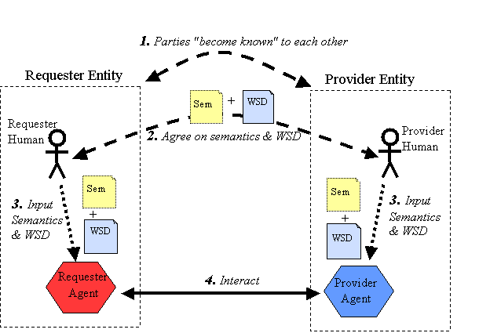

Web services are modular components that are made for various applications to interact with each other. They are typically made for reusability because many applications will connect to them. Typically web service messages are transferred in XML and the results are translated at the requesting application.
It is easier to understand the process of web services in diagrams.

The Requestor application learns how to use the web service through the web service descriptor (WSD). The WSD provides the semantics for actually using the web service. Once it knows the semantics about the web service the requestor application can interact with the web service.
There are many different types of web services, but this course will focus on the components of SOAP messaging.
WSDL
Before an application can utilize a web service it must know a little bit about the web service. This is where the WSDL (Web Service Description Language) comes in. The WSDL lets the application know how to interface with the web service. The WSDL is written in XML and uses the following elements.
Here is an example of a WSDL for a stock quote web service
<?xml version="1.0"?>
<definitions name="StockQuote"
targetNamespace="http://example.com/stockquote.wsdl"
xmlns:tns="http://example.com/stockquote.wsdl"
xmlns:xsd1="http://example.com/stockquote.xsd"
xmlns:soap="http://schemas.xmlsoap.org/wsdl/soap/"
xmlns="http://schemas.xmlsoap.org/wsdl/">
<types>
<schema targetNamespace="http://example.com/stockquote.xsd"
xmlns="http://www.w3.org/1999/XMLSchema">
<element name="TradePriceRequest">
<complexType>
<all>
<element name="tickerSymbol" type="string"/>
</all>
</complexType>
</element>
<element name="TradePrice">
<complexType>
<all>
<element name="price" type="float"/>
</all>
</complexType>
</element>
</schema>
</types>
<message name="GetLastTradePriceInput">
<part name="body" element="xsd1:TradePriceRequest"/>
</message>
<message name="GetLastTradePriceOutput">
<part name="body" element="xsd1:TradePrice"/>
</message>
<portType name="StockQuotePortType">
<operation name="GetLastTradePrice">
<input message="tns:GetLastTradePriceInput"/>
<output message="tns:GetLastTradePriceOutput"/>
</operation>
</portType>
<binding name="StockQuoteSoapBinding"
type="tns:StockQuotePortType">
<soap:binding style="document"
transport="http://schemas.xmlsoap.org/soap/http"/>
<operation name="GetLastTradePrice">
<soap:operation
soapAction="http://example.com/GetLastTradePrice"/>
<input>
<soap:body use="literal"
namespace="http://example.com/stockquote.xsd"
encodingStyle="http://schemas.xmlsoap.org/soap/encoding/"/>
</input>
<output>
<soap:body use="literal"
namespace="http://example.com/stockquote.xsd"
encodingStyle="http://schemas.xmlsoap.org/soap/encoding/"/>
</output>
</operation>
</binding>
<service name="StockQuoteService">
<documentation>My first service</documentation>
<port name="StockQuotePort" binding="tns:StockQuoteBinding">
<soap:address location="http://example.com/stockquote"/>
</port>
</service>
</definitions>
<binding name="StockQuoteServiceBinding"
type="StockQuoteServiceType">
<soap:binding style="rpc"
transport="http://schemas.xmlsoap.org/soap/http"/>
<operation name="getQuote">
<soap:operation
soapAction="http://www.getquote.com/GetQuote"/>
<input>
<soap:body type="InMessageRequest"
namespace="urn:live-stock-quotes"
encoding="http://schemas.xmlsoap.org/soap/encoding/"/>
</input>
<output>
<soap:body type="OutMessageResponse"
encoding="http://schemas.xmlsoap.org/soap/encoding/"/>
</output>
</operation>
</binding>
<service name="StockQuoteService">
<documentation>My first service
</documentation>
<port name="StockQuotePort"
binding="tns:StockQuoteBinding">
<soap:address location="http://example.com/stockquote"/>
</port>
</service>
</definitions>
SOAP
Once an application knows how to utilize a web service, it can use SOAP to actually interact with the web service. SOAP, Simple Object Access Protocol, is a messaging protocol used to invoke remote web services. SOAP is normally sent through the HTTP protocol using a SOAP envelope, which contains a SOAP header and a SOAP message.
When the SOAP message is recieved by the web service, the web service is run and the response is sent back to the requesting application via a SOAP message. Again, these messages are sent using the HTTP protocol, so they are similiar to web requests.
Here are examples of SOAP messages for the Stock Quote Web Service.
Request
POST /StockQuote HTTP/1.1
Host: www.stockquoteserver.com
Content-Type: text/xml;
charset="utf-8"
Content-Length: nnnn
SOAPAction: "Some-URI"
<SOAP-ENV:Envelope
xmlns:SOAP-ENV="http://schemas.xmlsoap.org/soap/envelope/"
SOAP-ENV:encodingStyle="http://schemas.xmlsoap.org/soap/encoding/">
<SOAP-ENV:Body>
<m:GetLastTradePrice
xmlns:m="Some-URI">
<symbol>MOT</symbol>
</m:GetLastTradePrice>
</SOAP-ENV:Body>
</SOAP-ENV:Envelope>
This request is asking the web service for the last trading price of the stock MOT.
Response
HTTP/1.1 200 OK Content-Type: text/xml; charset="utf-8" Content-Length: nnnn <SOAP-ENV:Envelope xmlns:SOAP-ENV="http://schemas.xmlsoap.org/soap/envelope/" SOAP-ENV:encodingStyle="http://schemas.xmlsoap.org/soap/encoding/"/> <SOAP-ENV:Body> <m:GetLastTradePriceResponse xmlns:m="Some-URI"> <Price>14.5</Price> </m:GetLastTradePriceResponse> </SOAP-ENV:Body> </SOAP-ENV:Envelope>
The web service returned the price of $14.50 for the stock MOT. The application can now use the value.
There are many benefits to using web services for serving business logic to many applications at the same time.
Sources:
IBM Services Architecture Team. "Web Services Architecture Overview." 06 September 2000. DeveloperWorks. 18 April 2009 <http://www.ibm.com/developerworks/webservices/library/w-ovr/?dwzone=webservices>.
Nussbaumer, Martin and Margin Gaedke. "Technologies for Web Applications." Web Engineering. Ed. Gerti Kappel, et al. Hoboken: John Wiley & Sons Inc., 2006. 111-132.
Vasudevan, Venu. "A Web Services Primer." 1 April 2001. O'Reilly xml.com. 18 April 2009 <http://webservices.xml.com/pub/a/ws/2001/04/04/webservices/index.html?page=1>.
W3C. "Web Services Architecture." 2004. W3C. 18 April 2009 <http://www.w3.org/TR/ws-arch/>.